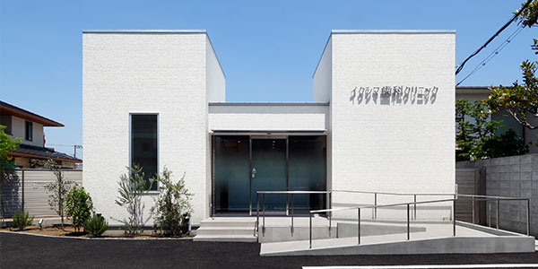

アクセス

下新庄駅からすぐの歯科医院、「イクシマ歯科クリニック」へ来院される方にアクセス方法をご案内いたします。
「イクシマ歯科クリニック」は阪急電車の下新庄駅から徒歩１分のところにありますので、アクセスがよく通いやすい立地にあります。
また駐車場、駐輪場もございますので、お車や自転車でお越しいただいても大丈夫です。
イクシマ歯科クリニックのアクセスマップ
電車でお越しの場合
下新庄駅西口を出たら、右方向に阪急の線路沿いを吹田駅方面に歩きます。 ファミリマートが左手に見えたら左折します。 数百メートルほど歩いていただくと左側に建物があります。
バスでお越しの場合
下新庄駅西口を出たら、右方向に阪急の線路沿いを吹田駅方面に歩きます。 ファミリマートが左手に見えたら左折します。 数百メートルほど歩いていただくと左側に建物があります。
お車でお越しの方
診療所正面に駐車場が2台分ございますので、ご自由にご利用ください。
ベビーカーや車椅子でお越しの方
当院ではベビーカーや車椅子の方に対しては、我々がお手伝いしております。 お電話等による予約の際にベビーカーや車椅子での来院を伝えていただけますと、 入り口でスタッフがスムーズにお手伝いできる状態で待機していますのでお気軽にご連絡ください。 院内はベビーカーでチェアの真横までお連れいただけます。